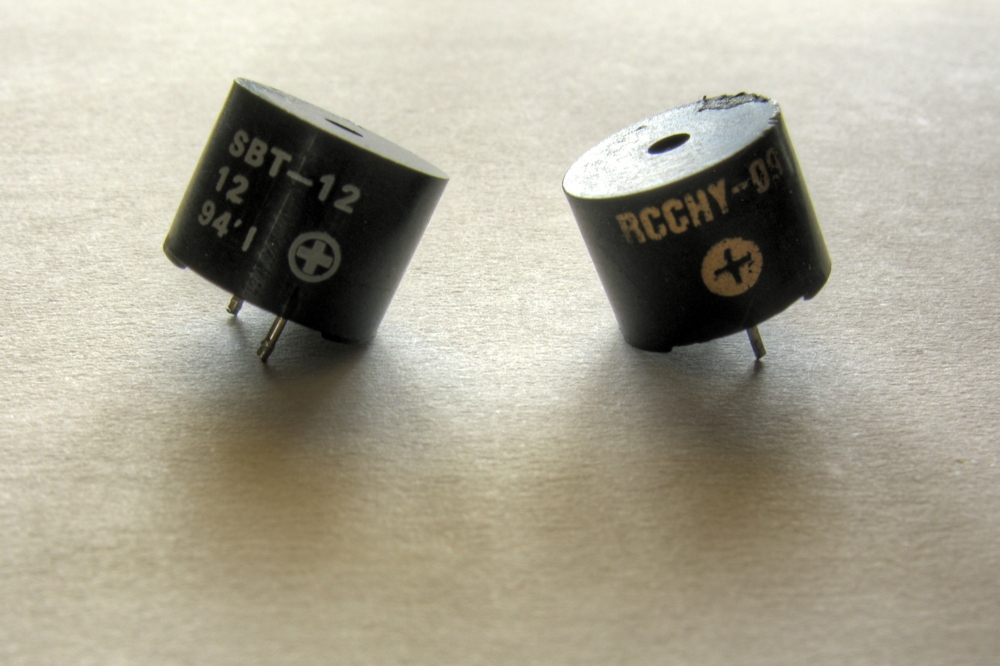
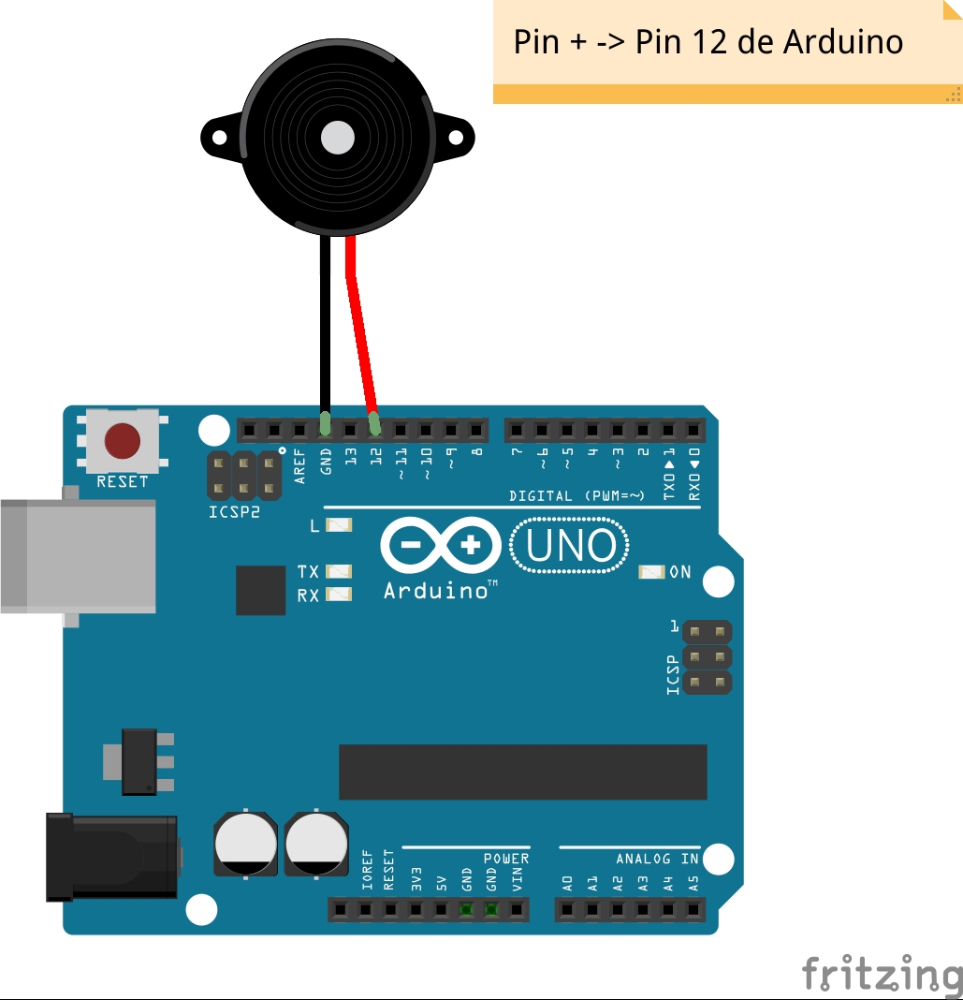

Conexionado del piezoeléctrico o zumbador
Principio físico del piezoeléctrico
Si acudes a fuentes fiables (al menos, bastante más fiables que este humilde sitio), aprenderás que lo que aquí llamo zumbador es un dispositivo que puede emitir sonidos, normalmente basándose en el efecto piezoeléctrico. Según este efecto (así, a grandes rasgos), hay materiales que, sometidos a una tensión eléctrica, se deforman y emiten un pequeño chasquido. De hecho, si conectas directamente este dispositivo a los pines 5V y GND de Arduino, en algunos casos emitirá directamente un sonido, chirriante, irritante, continuo. En ese caso, el zumbador que tienes es de tipo activo. Si queda en silencio, es de tipo pasivo. No te preocupes, igualmente podrás hacer que suene.

El caso es que, si conectas el polo positivo de tu zumbador (normalmente, tiene la patilla más larga, y además tiene por encima el símbolo +) a un pin de Arduino podrás reproducir distintos tonos. ¿Cómo?. Sencillo. Arduino puede encender y apagar el pin elegido muy rápidamente, a la frecuencia que desees. Si, por ejemplo, programas la tarjeta para que envíe "1" y "0" alternativamente a dicho pin cada cierto tiempo, pongamos 2 milisegundos, harás que el piezoeléctrico se deforme 500 veces por segundo, emitiendo el mencionado chasquido cada vez. Eso hará que oigas un tono de 500 hertzios. Si quieres, por ejemplo, oír un tono más agudo, cambia la frecuencia de conexión/desconexión a 1 milisegundo. Ahora, el sonido emitido será de 1000 hertzios. Sencillo, ¿verdad?.
Conexionado
Esta vez está chupado, ¿no?. La patilla corta, a GND, y la larga, a un pin de Arduino. Yo me quedo con la 12.
| CONEXIÓN DEL BUZZER/ZUMBADOR | |
|---|---|
| PATILLA DEL SENSOR | PIN DE ARDUINO |
| + | 12 |
| - | GND |

Resumen
Un zumbador no tiene una gran utilidad técnica, pero siempre da vidilla. Además, pienso enseñarte a hacerle gorgear como R2-D2, que hasta tengo una pieza en MasayloBlockly para eso con el robot Masaylo. Pero bueno, ya lo iremos viendo. ¡Que la fuerza te acompañe!